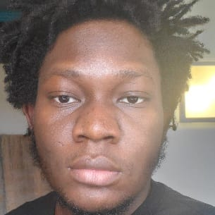

|  |
AdedamolaMaster's Student and Life Enjoyer. A Robotics Engineer with a double degree master's in Control and Robotics: Advanced Robotics at ECN, France and Robotics Engineering at the University of Genoa, Italy. Generally, I have a strong learning drive and love to engage in everything from the arts to the sciences. I hope to be able to build a list of skills and implement them creatively. Being a computer and hardware nerd, I walk the path of various life projects, and this includes tweaking around with some parts, developing software and games, messing around with robots |
Being a EMARO+ (European Masters' in Advanced Robotics) Scholar, I have been given the chance to school in two leading universities in Europe to study robotics. My interest in robotics revolves around sustainability and improving every chance of survival humans have on earth. This involves robots for health, sustainable and progressive purposes. My preferred areas of research include perception and navigation, and field of implementation would be Agriculture if chanced.
The foundation master’s course was taken in order to build skills not formerly acquired or nurtured through the first degree, and introduce myself to new concepts in a new country. All important papers were passed with good marks.
Successfully completed B.Eng. in mechanical engineering with a 4.5/5 (90%, First Class Honors), from one of Africa’s leading universities. Course work involved leadership, entrepreneurial and ethics courses, speaking for the confidence in my ability to be a productive team member, and in any given case, team leader. The final project was done on electroless and electrolytic nickel coatings, of which a review paper on corrosion prevention using electroless coatings had been recently published.
DOI: 10.1080/2374068X.2021.1896863
DOI: 10.3934/matersci.2020.4.441
DOI: 10.1007/s40735-020-00392-5
DOI: 10.1088/1742-6596/1378/4/042084
DOI: 10.1088/1742-6596/1378/2/022063
| Dates | Work | |
|---|---|---|
| 2022 | Robotics Engineer at Hiro Robotics | Developed perception for recycling robot. |
| 2017 | Kento Autocare (Intern) | Assited Techinicians to fix and research vehicles. |
| 2017 | Pilot Science(Intern) | Worked with engineers for rapid prototyping |
| 2017 | Medview-Airlines(Intern) | Assisted the technicians with managing and fixing commercial airplanes (quit cause there wasn't so much to do tbh) |
| C++ Programming | ⭐⭐⭐ |
| Python Programming | ⭐⭐⭐ |
| Solidworks | ⭐⭐⭐⭐ |
| ROS | ⭐⭐⭐ |
| French Language | ⭐⭐⭐ |